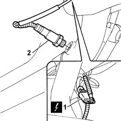
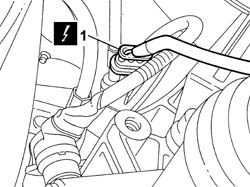
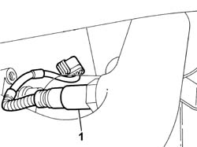
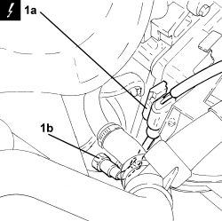

1080B95 rear lambda probe with catalitic converter r r
- Path
- Procedures > 10 ENGINE > 1080 EMISSION CONTROL SYSTEM > 1080B exhaust emission control system > 1080B95 rear lambda probe with catalitic converter r r
- Kind
- repair procedure (removal / refitting; the operation number is the code)
- Applies to
- engines: 1.2 8v, 1.4 8v, 1.6 16v; all production periods
- Interactive page
- https://sloeber94.github.io/elrnDB-fDbl/en/#/2584272
Applies to: engines: 1.2 8v; all production periods
 Removing
Removing
 Refitting
RefittingPosition the vehicle on a lift.
Op. 7055B54 PROTECTION/GUARD UNDER ENGINE - R.R.
Disconnect the negative battery terminal.
1. Disconnect the electrical connection for the Lambda sensor.
Description | Connector | |
|---|---|---|
1 | Lambda sensor - 2 |
Raise the lift.
2. Undo the Lambda sensor and remove it.

Applies to: engines: 1.2 8v; all production periods
Refitting
RemovingTighten the Lambda sensor to torque.
Fastening | Component | dia | Value (daNm) | |
|---|---|---|---|---|
- | - | RIGHT LAMBDA SENSOR | M8 X 1.5 | 4.5 |
Lower the lift.
Connect the electrical connection for the Lambda sensor.
Description | Connector | |
|---|---|---|
- | Lambda sensor - 2 |
Connect the negative battery terminal.
Op. 7055B54 PROTECTION/GUARD UNDER ENGINE - R.R.
Remove the vehicle from the lift.
Applies to: engines: 1.6 16v; all production periods
Removing
RefittingPosition the vehicle on a lift.
Disconnect the negative battery terminal.
Description | Connector | |
|---|---|---|
- | Battery |
Op. 1048A32 HOSE FROM AIR FILTER TO INTAKE MANIFOLD - R.R.
1. Disconnect the electrical connection for the Lambda sensor.
Description | Connector | |
|---|---|---|
1 | Lambda sensor on catalyzer |

Applies to: engines: 1.6 16v; all production periods
1. Unscrew and remove the rear lambda sensor from the catalytic converter.

Applies to: engines: 1.6 16v; all production periods
Refitting
RemovingPosition the rear Lambda sensor and tighten it to the catalytic converter to the recommended torque.
Fastening | Component | dia | Value (daNm) | |
|---|---|---|---|---|
- | - | REAR LAMBDA SENSOR TO CONVERTER | M18 x 1.5 | (Manifold side) 4.5 |
Restore the electrical connection for the Lambda sensor.
Op. 1048A32 HOSE FROM AIR FILTER TO INTAKE MANIFOLD - R.R.
Description | Connector | |
|---|---|---|
- | Lambda sensor on catalyzer |
Connect the negative battery terminal.
Description | Connector | |
|---|---|---|
- | Battery |
Remove the vehicle from the lift.
Applies to: engines: 1.4 8v; all production periods
Removing
Refitting- Disconnect the negative battery terminal.
1. Disconnect electrical connection (1a), unscrew and remove the lambda sensor behind catalytic converter (1b).
Description | Connector | |
|---|---|---|
1a | Lambda sensor on catalyzer |

Applies to: engines: 1.4 8v; all production periods
Refitting
Removing- Refit the rear lambda sensor in its housing on the catalytic converter and tighten it to the recommended torque.
Component | Fastening | dia | Value (daNm) | Validity |
|---|---|---|---|---|
Lambda sensor | - | M18 | 4.1 ÷ 5.0 | 1.2 8v 1.4 8v 1.3 Multijet 90 CV |
- Connect the electrical connection for the rear Lambda sensor to the catalytic converter.
- Connect the negative battery terminal.
Topics linked from this page (6)
- 1048A32 sleeve from air cleaner to intake manifold - r + r
- 7055B54 under-engine guard - r r
- A001 BATTERY
- K017 LAMBDA SENSOR ON CATALYZER
- K17 LAMBDA SENSOR ON CATALYZER ( ENGINE )
- K39 LAMBDA SENSOR - 2 ( ENGINE )